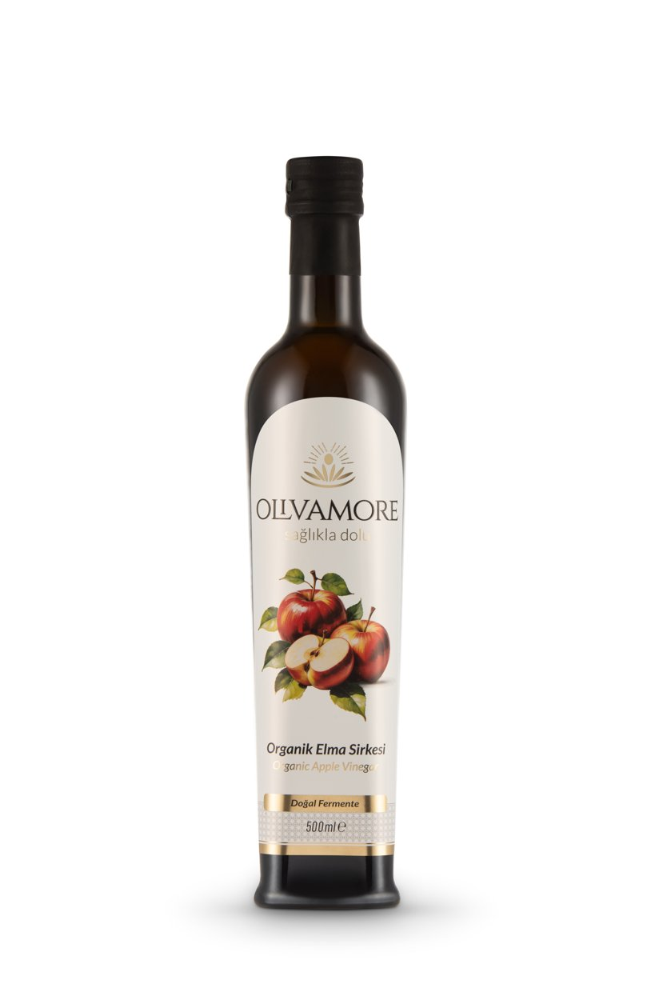

Tarif · Organik Elma Sirkesi
Elma Sirkeli Ispanak, Elma ve Ceviz
Çıtır, taze ve günlük: elmanın meyvemsi ekşiliğini aynı aileden sirkeyle uzatan pratik salata.
12 dk · 2-3 kişilik

Çıtır, taze ve günlük: elmanın meyvemsi ekşiliğini aynı aileden sirkeyle uzatan pratik salata.
12 dk · 2-3 kişilik
Elma ve yeşilliklerle temiz, meyvemsi bir ekşilik; servisten hemen önce kullan.
